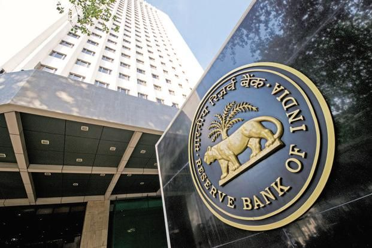

Loan default and repayment issues arise when borrowers are unable to repay loans on time due to financial difficulties, disputes, or unforeseen circumstances. Such situations often lead to bank notices, recovery actions, or legal proceedings , requiring timely legal guidance.
Bank recovery notices are issued when a borrower fails to repay loan dues within the stipulated time. These notices may be the first step toward legal recovery, property attachment, or further action by the bank , making timely legal response important.
Cheque bounce cases arise when a cheque is returned unpaid by the bank due to insufficient funds or other reasons. Such matters may lead to legal proceedings under applicable banking and criminal laws , making timely legal action important.
DRT cases involve recovery proceedings initiated by banks or financial institutions before the Debt Recovery Tribunal. These cases usually arise from loan defaults and recovery actions against borrowers or guarantors , requiring legal representation before the tribunal.
Loan settlement and One-Time Settlement (OTS) matters arise when borrowers seek to close loan accounts by paying a negotiated amount. These options are commonly considered in cases of financial difficulty or long-pending loan defaults , requiring proper legal guidance and negotiation.
Guarantor liability issues arise when a guarantor is held responsible for repayment of a loan due to default by the borrower. Banks may initiate recovery action against guarantors even if the borrower has not paid , making legal guidance important.
Mortgage and property security disputes arise when property offered as security for a loan becomes subject to legal or recovery action. Such disputes may involve ownership issues, loan defaults, or enforcement of security by banks or financial institutions , requiring proper legal assistance.
Bank account freeze issues arise when a bank restricts withdrawals or transactions from an account due to legal, regulatory, or investigation reasons. Such action can affect daily expenses and business operations , making timely legal assistance important.
Banking fraud allegations arise when a borrower, account holder, or business is accused of fraudulent activity in relation to banking transactions. Such allegations may lead to investigation, account restrictions, or criminal proceedings , requiring timely legal assistance.

Phone: +91 7899469002
Email: sarada.law.chamber@gmail.com